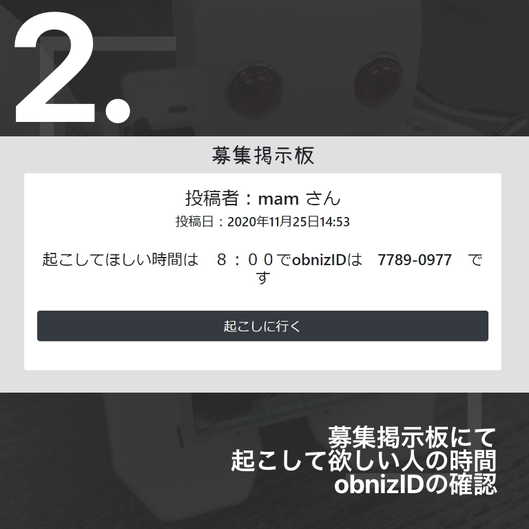

{% extends 'base.html' %}
{% block contents %}

<div class="d-flex justify-content-between flex-wrap flex-md-nowrap align-items-center mt -5 "></div>
<h2><center><font  face="瀬戸フォントSP_sjis版">トップページ</font></center></h2><br>
<br>
<ga>　　　　　　　　
    <a href="/post"></a>
　　　 
    <a href="/post-list"></a> 
</ga>
<br>
<br>
<br>
<br>
<div class="col-md-10 offset-md-1">
<div class="card">
<div class="card-body">
    <h2><center><font  face="瀬戸フォントSP_sjis版">紹介動画</font></center></h2>        
<center><video autoplay muted playsinline src="../../media/plen.mp4" alt="mp4" width="960" height="540" ></video></center> 
</div>
</div> 
</div>
<br>
<br>
<div class="col-md-10 offset-md-1">
    <div class="card">
    <div class="card-body">
        <h2><center><font  face="瀬戸フォントSP_sjis版">使用方法</font></center></h2><br>
        <h3><left><font  face="瀬戸フォントSP_sjis版">起こしてもらうとき</font></left></h3><br>        
        <div class="popup">
        　　　　　　　
        　　　　
        　　　　　<br>
        <br><h3><left><font  face="瀬戸フォントSP_sjis版">起こしてあげるとき</font></left></h3><br>
        　　　　　　　
        　　　　
        　　　　　<br>
    </div>
    </div> 
    </div>


{% endblock %}